Git
Control de versiones
Campus d'Estiu d'Innovació Tecnològica UIB 2015
Pablo Bernardo / @voylinux
¿Qué es y para qué necesito un control de versiones?
Un control de versiones te permite controlar todo el flujo de evolución de tu código.
Compartiendo código
Desarrollando en paralelo
Recuperando versiones anteriores
¿Qué es un repositorio?
El lugar donde almacenamos el código y su histórico de cambios
Sistemas centralizados vs distribuidos
Sistemas centralizados
Un servidor central
Copia del código al crear ramas
Imposibilidad de hacer guardados locales de estado
...
Sistemas distribuidos
Los nodos trabajan de manera independiente
Cada cliente tiene toda la información del repo
Concepto de trabajo en pequeños commits sin acceso al repo
...
Git
¿Qué es un commit y cómo lo hace Git?
Objecto commit y sus referencias
Obteniendo un repositorio
git clone https://github.com/voylinux/control_versiones_uib_2015/
¿Qué obtenemos?
Copia completa de toda la información del repositorio
Confirmando cambios
git status
git add whatever.html
Enviando cambios
git push
Trabajando con ramas
¿Cómo y por qué?
Creando ramas
git branch issue-new-branch
git checkout issue-new-branch
o
git checkout -b issue-new-branch
Gestión de ramas en Git

Merge y rebase
Integrando código
La eterna duda
Merge
Fusionar código generando un commit

Rebase
Creando una historia lineal

¿Qué podría salir mal?
Resolver conflictos
Metodología
Una rama estable
Una rama por funcionalidad
Rebase por defecto